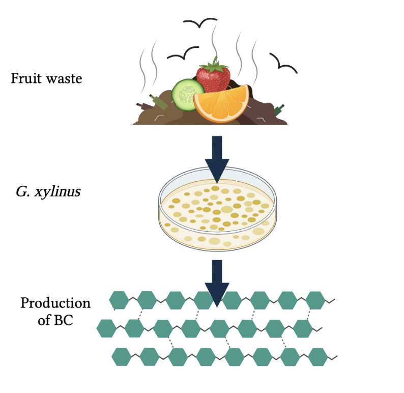

Figure 1: General workflow for bacterial cellose in fruit waste.
Fruit Waste Carbon Source (BC Growth Medium Preparation)
Extraction of Juices and Aqueous Extracts from Citrus Peels (Do Separately for Oranges and Grapefruits)
- Peels are autoclaved for sterilization.
- Peels are cut into segments smaller than 5mm.
- Peels (<5mm, 80g) are added to 250mL deionized water and pH is adjusted to 1.5 with 0.5 M HCl.
- The mixture is heated at 90 °C for 1 h.
- The liquid phase containing pectin is separated from the remaining solid residue by vacuum filtration.
- The remaining solid residue (consisting mainly of cellulosic matter) is dried at 30 °C for 24 h and weighed.
- After juice extraction, the solid citrus waste (SCW) is mixed with water in a liquid-to-solid ratio 3:1 and boiled for 1h.
- The liquid phase is separated from the solid with vacuum filtration.
- Remaining SCW is stored at -20 °C for future use.
Processing of Non-Peel Fruits
- Fruits are washed, then crushed and squeezed.
- The juices and solid residues are separated by filtration with filter paper for pulp, then filter-sterilized and stored at -15 °C until future use.
Preparing the BC Growth Medium
- The nitrogen sources in the Hestrin and Schramm media (0.5% peptone, 0.5% yeast extract, 0.15% citric acid) are added to the various fruit juice and aqueous fruit extract solutions.
- Various fruit juice concentrations are tested: in 1L of media, solutions of 50mL fruit juice, 100mL fruit juice and 250mL fruit juice are added.
- The pH of the various extracts is adjusted to pH 6 with a disodium hydrogen phosphate buffer (or 5 M NaOH).
G. xylinus BC Production
Producing BC in Modified Solutions
- Seed cultures are obtained from a strain of cellulose-producing G. xylinus and inoculated with 10mL of Hestrin and Schramm broth.
- The cultures are incubated at 28 °C for seven days under static conditions. Growth is assessed with optical density measurements.
- Following growth, the seed cultures are shaken vigorously with a rotary shaker to separate the cellulose pellicles from the bacterial cells.
- The pellicles are removed, and the resulting cell suspension is used for inoculations.
- 200mm diameter glass petri dishes are sterilized by autoclave or by 95% ethanol solution.
- Cultures are grown in the 200mm x 30mm glass petri dishes with 20mL of growth media and inoculated at a concentration of 1% (v/v) of the cell suspension.
- For the control, the unaltered Hestrin and Schramm media is used.
- The control Hestrin and Schramm medium is composed of 2.0% glucose (w/v), 0.5% yeast extract (w/v), 0.5% peptone, 0.27% anhydrous disodium phosphate (w/v), and 0.15% citric acid (v/v).
- For the various tests, the modified growth mediums from various fruit extracts are used.
- Test solutions include: orange juice solution, orange peel aqueous extracts, grapefruit juice, grapefruit peel extracts, apple juice, pear juice, and a mixture of the above solutions.
- The cultures are incubated at 28 °C for seven days under static conditions.
- After incubation, the BC products are separated from the culture broth by a simple sieve (60 mesh).
- The BC products are incubated in 0.1 M NaOH for 1h to lyse remaining bacteria, then rinsed several times with deionized water.
- The cleaned BC products are dried in an oven at 60 °C to reduce humidity.
- The thickness of the coatings is measured with a caliper micrometer.
- The cultures are incubated at 28 °C for seven days under static conditions.
- After incubation, the BC products are separated from the culture broth by a simple sieve (60 mesh).
- The BC products are incubated in 0.1 M NaOH for 1h to lyse remaining bacteria, then rinsed several times with deionized water.
- The cleaned BC products are dried in an oven at 60 °C to reduce humidity.
- The thickness of the coatings is measured with a caliper micrometer.
Lysozyme Adsorption
- The BC products are immersed into a lysozyme binding solution (10g/L in 20mM KH2PO4 at pH 6).
- The immersed samples are incubated at room temperature with slight shaking for 18h.
- After incubation, the samples will be washed twice in fresh buffer solution (20mM KH2PO4 at pH 6), air dried, and stored at room temperature.
Coating Application
Coated Fruit
- Apples are carefully washed and dried.
- The BC film coating is applied with gloves.
- The apple is placed in the center of the coating circle and the sides of the BC product are carefully smoothed upward to coat the apple.
- The coated apples are weighed and photographed.
Control Fruit
- Uncoated apples are carefully washed and dried for use as controls.
- The uncoated apples are weighed and photographed.
Testing Coating Properties
Testing Gloss
- The gloss of each fruit (coated and uncoated) is measured using a reflectometer (model micro-TRI-gloss by BYK-Gardner) equipped with a shield with a 19-mm-diameter aperture at an angle of 60°, with readings expressed in gloss units (GU).
- Ten measurements are made per fruit.
Testing Fruit Firmness
- For the coated apples, small circles (16mm in diameter) are cut into the coating on opposite sides of the fruit and carefully removed.
- The firmness of each fruit (coated and uncoated) are assessed with a penetrometer (FT327 by Effegi) with a cylindrical plunger 11mm in diameter, with one reading taken from each side of the fruit.
Testing Internal O2/CO2 Levels
- Syringes are flushed with water to remove trapped air.
- Individual apples (both coated and controls) are submerged underwater and a syringe needle is inserted through the stylar end into the core cavity. A 5-10mL sample is withdrawn.
- CO2 and O2 concentrations are analyzed using a gas chromatograph with a thermal conductivity detector and a CTR-1 column (by Alltech Associates), which gives separate peaks for CO2 and O2 readings.
References:
- Andritsou V, de Melo EM, Tsouko E, Ladakis D, Maragkoudaki S, Koutinas AA, et al. Synthesis and Characterization of Bacterial Cellulose from Citrus-Based Sustainable Resources. ACS Omega. 2018 Aug 31;3(8):10365–73.
- Kurosumi A, Sasaki C, Yamashita Y, Nakamura Y. Utilization of various fruit juices as carbon source for production of bacterial cellulose by Acetobacter xylinum NBRC 13693. Carbohydrate Polymers. 2009 Mar 17;76(2):333–5.
- Kuo C-H, Huang C-Y, Shieh C-J, Wang H-MD, Tseng C-Y. Hydrolysis of Orange Peel with Cellulase and Pectinase to Produce Bacterial Cellulose using Gluconacetobacter xylinus. Waste Biomass Valor. 2019 Jan 1;10(1):85–93.
- Ruka DR, Simon GP, Dean KM. Altering the growth conditions of Gluconacetobacter xylinus to maximize the yield of bacterial cellulose. Carbohydrate Polymers. 2012 Jun 20;89(2):613–22.
- Hestrin S, Schramm M. Synthesis of cellulose by Acetobacter xylinum. 2. Preparation of freeze-dried cells capable of polymerizing glucose to cellulose. Biochem J. 1954 Oct;58(2):345–52.
- Hsieh J-T, Wang M-J, Lai J-T, Liu H-S. A novel static cultivation of bacterial cellulose production by intermittent feeding strategy. Journal of the Taiwan Institute of Chemical Engineers. 2016 Jun 1;63:46–51.
- Toscano Ávila JA, Terán DA, Debut A, Vizuete K, Martínez J, Cerda-Mejía LA. Shelf life estimation of Blackberry (Rubus glaucus Benth) with bacterial cellulose film coating from Komagataeibacter xylinus. Food Science & Nutrition. 2020;8(4):2173–9.
- Buruaga-Ramiro C, Valenzuela SV, Valls C, Roncero MB, Pastor FIJ, Díaz P, et al. Development of an antimicrobial bioactive paper made from bacterial cellulose. International Journal of Biological Macromolecules. 2020 Sep 1;158:587–94.
- Bai J, Hagenmaier RD, Baldwin EA. Coating selection for ‘Delicious’ and other apples. Postharvest Biology and Technology. 2003 Jun 1;28(3):381–90.
- Alleyne V, Hagenmaier RD. Candelilla-shellac: An Alternative Formulation for Coating Apples. HortScience. 2000 Jul 1;35(4):691–3.
- Chan CK, Shin J, Jiang SXK. Development of Tailor-Shaped Bacterial Cellulose Textile Cultivation Techniques for Zero-Waste Design. Clothing and Textiles Research Journal. 2018 Jan 1;36(1):33–44.